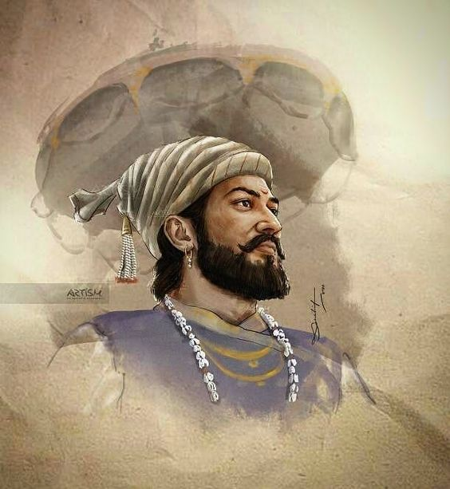

Shivaji Shahaji Bhosle
@Chattrapati_Shivaji_Maharaj
- Born at Shivneri Fort Junnar (Present) Maharashtra on 19 feb 1630.
- Mother JijaBai Shahaji Bhosle, Father Shahaji Maloji Bhosle.
- Guru Daduji Kondev and Swami Samarth Ramdas.
- Creator of Hindvi Swaraj , First Navy, Gorilla warfare technique and many more...
- Became the Hindu King (Janta Raja) on 6 June 1664.
- Killed Afzal Khan at Pratapgarh on 10 November 1669 with his weapon called "Waghnakh".
- Started with only 4 forts and 2000 soliders ends up creating the Army of 1 lakh soliders with 300 forts.
- Death touches the feet of Maharaj on 5 April 1680 and makes him immortal.